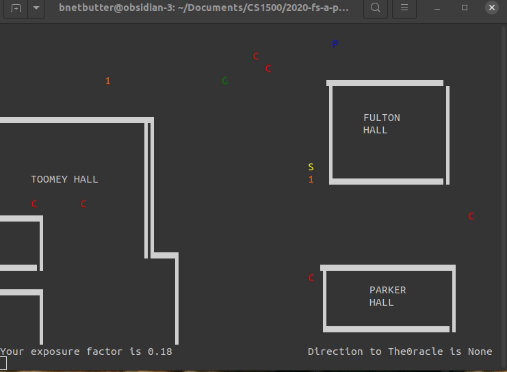

Rolla Quest 3D¶
Rolla Quest was the final project for our freshman programming class. It was a 2D top down game where ‘G’ had to avoid the virus and pick up masks to survive. The original was something like this
But why stop at 2D? Why not 3D using the old DOOM rendering technique?

It’s not real 3D because it ray casts only on the 2D plane. Y shearing gives the illusion of being able to look up and down. In order to get a playable framerate, I wrote a virtual GPU engine to process the frame in parallel. A buffer is created in shared memory. Each python process (8 is spawned by default) renders 1/8th the frame and writes to only 1/8th the buffer. After vertical sync (all 8 processes completed their slice), the data is copied out of shared memory and into a bitmap image and loaded into the widget.